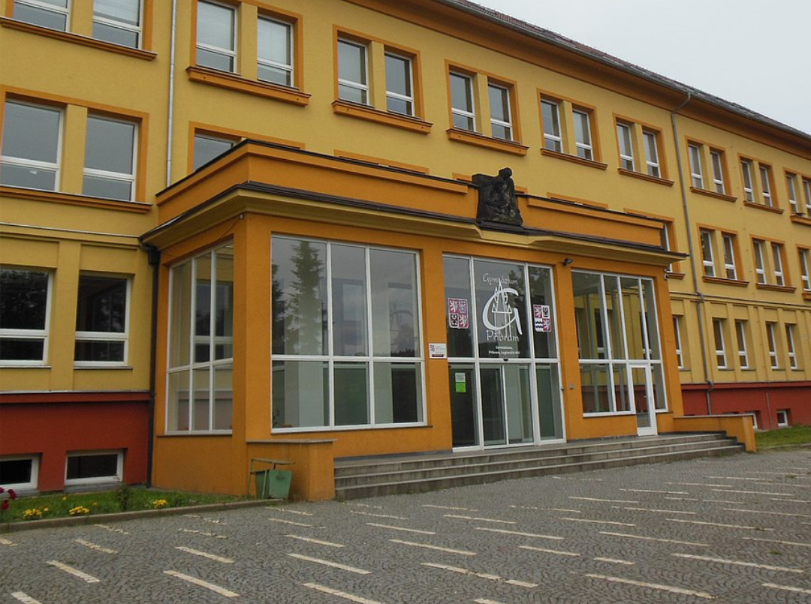

Včerejší odpoledne na příbramském gymnáziu připomínalo postapokalyptický scénář. Chodby zaplnili studenti zmateně hledící na své telefony, které odmítaly načíst sociální sítě i studijní materiály. Zatímco vedení školy zvažovalo technickou závadu u poskytovatele, pravda byla mnohem prostší a drzejší. Podle všeho se jednalo o neoficiální „vzdělávací experiment“ studentů z průmyslové školy, kteří se rozhodli prověřit odolnost zabezpečení svých sousedů. Incident zanechal stovky gymnazistů v naprosté informační izolaci, což u některých vyvolalo první příznaky paniky z nedostatku online obsahu.
Reakce z druhé strany barikády na sebe nenechala dlouho čekat. Anonymní zdroj z IT oboru průmyslovky celou akci označil za dobročinný stress-test. „Měli by nám spíš poděkovat, že jsme jim ukázali slabiny dřív než někdo skutečně zlý,“ nechal se slyšet jeden z autorů útoku. Podle něj šlo o praktickou ukázku toho, že teorie v učebnicích nestačí a že trocha „vzdělávacího chaosu“ nikoho nezabije. Zatímco IT technici na gymnáziu nyní horečně přenastavují firewally, studenti průmyslovky už pravděpodobně plánují další lekci kybernetické bezpečnosti pro zbytek města.